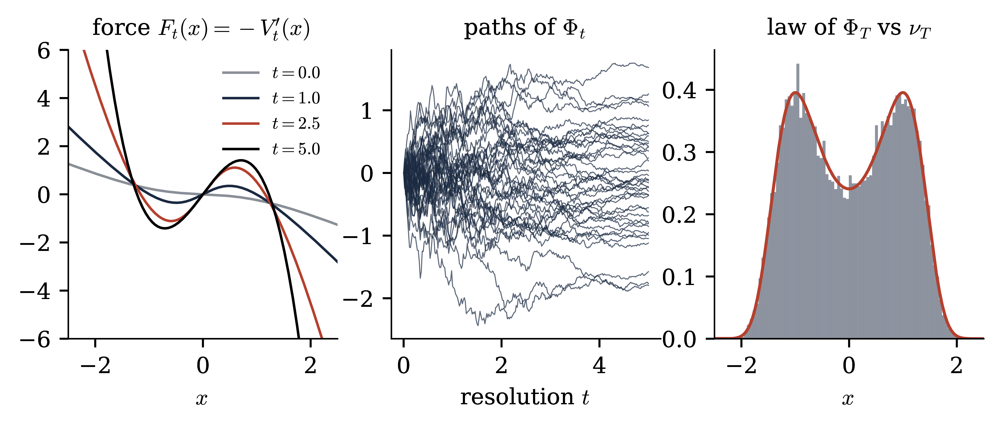
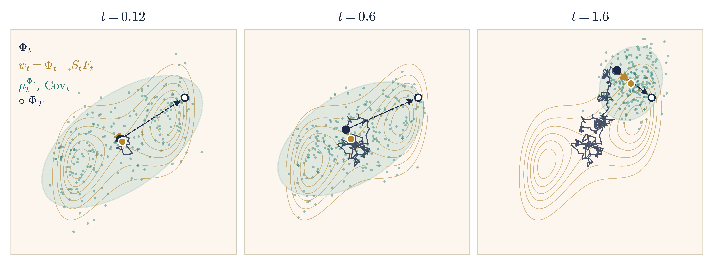
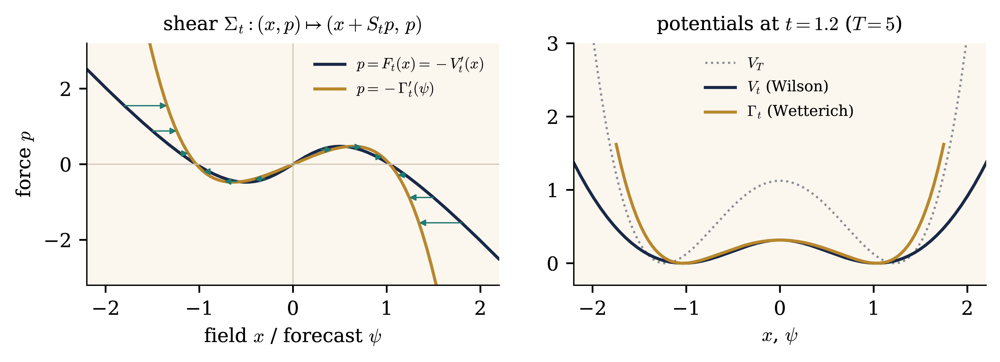
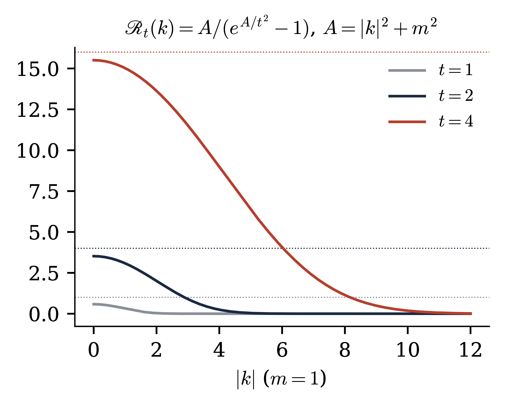

Constructive quantum field theory — Lecture 4 (notes)
A Constructive Introduction to Quantum
Field Theory
Lecture 4: The Polchinski flow and
forward–backward equations
by M. Gubinelli
Mathematical Institute, University of Oxford
November 2026 —provisional
Abstract
Building on the scale decomposition and the stochastic
observables of Lecture 3, we introduce interactions through the
Polchinski equation for the effective potential. Its probabilistic
counterpart is a forward–backward stochastic differential
equation (FBSDE) for the field seen at increasing resolution, whose
effective force is a martingale. Writing the FBSDE in the coordinate
given by the conditional mean of the terminal field removes its drift
and integrates the transport part of the force flow exactly. In the
gradient case the remaining equation for the force is the Wetterich
equation for the effective average action, whose propagator is the
conditional covariance. We then discuss the variational structure of
the flow (Boué–Dupuis formula and
Hamilton–Jacobi–Bellman equation) in finite and infinite
volume. The additional material covers the algebraic and perturbative
structure of the flow (semigroup, flatness, counterterms for
\(\Phi^4_3\)), and the Dyson–Schwinger equations at every scale.
The treatment is formal: we compute as if all objects were smooth and
integrable, and we indicate where the real difficulties lie.
In Lecture 3 we decomposed the Gaussian free field along a resolution
parameter and took as primary objects the stochastic observables:
martingales in the filtration of finite-resolution measurements [BCG26]. In this lecture we introduce interactions. The
effective potentials solve the Polchinski equation, and the interacting
field seen at increasing resolution solves a forward–backward
stochastic differential equation whose force is itself an observable.
See also [Pol84, BK87, Sal99, BBD24] for the renormalisation group side and [BG20,
BG24] for the variational side.
Structure.
Part I (Sections 7–9) is the core of
the lecture: the Polchinski equation and its FBSDE, the FBSDE in force
coordinates and the Wetterich equation, and the variational structure.
Part II (Sections 10 and 11) is additional
material, referred to from Part I where needed.
What is formal.
Rigorous statements require a finite-dimensional setting: a finite
lattice, or a Fourier cutoff on the torus, together with a finite
terminal resolution \(T\). There, all the identities below are
theorems under mild growth assumptions on the interaction, and their
proofs are the computations we give. The hard problems are the limits
\(T \to \infty\) (ultraviolet) and infinite volume (infrared),
together with the locality of the limiting objects. We mark with
(formal) the statements that we only derive at
this level.
Conventions.
As in Lectures 1–3: \(\mathcal{M}=\mathbb{T}^d_L\) or
\(\mathbb{R}^d\), \(A = m^2 - \Delta\), \(C = A^{- 1}\) with kernel
\(G\), \(\mu_m\) the GFF, \(\langle f, g \rangle = \int fg\) for real
functions. For a functional \(F\) on smooth fields, \(DF (\varphi) \in
\mathcal{S}' (\mathcal{M})\) and \(D^2 F (\varphi)\) are its first and
second derivatives, \(D_h F = \langle DF, h \rangle\). \(H_n (a ;
c)\) are the Hermite polynomials of variance \(c\), and \(\mu^Q\) is
the centred Gaussian measure with covariance \(Q\).
Part I. Main lecture
7Interactions: the Polchinski
equation and FBSDEs
7.1Effective potentials
Fix a finite volume \(\mathcal{M}=\mathbb{T}^d_L\) and a terminal
resolution \(T < \infty\), which plays the role of an ultraviolet
cutoff: the reference field \(X_T \sim \mu^{Q_T}\) is smooth. Let
\(V_T\) be an interaction, a functional of smooth fields bounded below.
Our main example is
\(V_t\) is the interaction felt by the field at resolution \(t\) once
the fluctuations between \(t\) and \(T\) have been integrated out: it is
the Wilson effective action. At \(t = 0\), \(V_0 (0) = - \log Z_T\) is
the free energy. Here is the first key fact.
Proposition 7.2.
(Marginals)
Let \(\mathbb{P}\) be defined by \(\mathrm{d} \mathbb{P}/ \mathrm{d}
\mathbb{P}_0 = Z_T^{- 1} \mathrm{e}^{- V_T
(X_T)}\), where
\(\mathbb{P}_0\) is the law of the Gaussian process \(X\). Then
\(\text{Law}_{\mathbb{P}} (X_T) = \nu_T\), and for every \(t \leq
T\)
Proof. Under \(\mathbb{P}_0\), \(X_T = X_t +
(X_T - X_t)\) with an independent increment of law \(\mu^{Q_{T, t}}\).
Hence \(\mathbb{E}_{\mathbb{P}} [G (X_t)] = Z_T^{- 1} \mathbb{E}_0 [G
(X_t)
\mathrm{e}^{- V_T (X_T)}] = Z_T^{- 1} \mathbb{E}_0 [G (X_t)
\mathrm{e}^{- V_t
(X_t)}]\). The conditional law follows in the same
way.\(\Box\)
So at every resolution the field is again a Gibbs measure, with
reference covariance \(Q_t\) and potential \(V_t\). The measure-valued
martingale \((\mu_t^{X_t})_t\) goes from \(\nu_T\) at \(t = 0\) to
\(\delta_{X_T}\) at \(t = T\): it is a stochastic localisation
of \(\nu_T\) in the sense of Eldan [Eld23], adapted to the
covariance profile [BBD24, BCG26].
Proof. \(u_t := \mathrm{e}^{- V_t} =
\mathrm{e}^{\frac{1}{2} \Delta_{Q_{T, t}}} u_T\) is a Gaussian
convolution, where \(\Delta_Q := \text{Tr} (QD^2)\). Since \(\partial_t
Q_{T, t} = - \dot{Q}_t\), it solves the backward heat equation
\(\partial_t u_t = - \frac{1}{2} \text{Tr} (\dot{Q}_t D^2 u_t)\). Insert
\(D^2 u = (DV \otimes DV - D^2 V) u\) and divide by \(- u\).\(\Box\)
The nonlinear term generates new, generally nonlocal, interactions
(trees), and the trace term contracts pairs of fields with the
covariance of the shell \([t, t + \mathrm{d} t]\) (loops). The
substitution \(u = \mathrm{e}^{- V}\), which linearises the equation, is
a Cole–Hopf transform: we come back to this in Section 7.4,
and in Section 10.
7.2The Polchinski process
Theorem 7.4. (FBSDE for the interacting field) (formal) Under \(\mathbb{P}\) the
process \(\Phi_t := X_t\), the interacting field at resolution
\(t\), solves
with \(\Phi_0 = 0\) and a \(\mathbb{P}\)-cylindrical Brownian
motion \(W^{\mathbb{P}}\). In particular the effective force
\((F_t)_{t \leq T}\) is a \(\mathbb{P}\)-martingale: an observable
field of the interacting theory.
Proof. The density process is \(M_t :=
\mathbb{E}_0 [\mathrm{d} \mathbb{P}/ \mathrm{d}
\mathbb{P}_0
|\mathcal{F}_t] = Z_T^{- 1} \mathrm{e}^{- V_t (X_t)}\), by
Proposition 7.2. By Itô's formula and (7.6), its drift vanishes and \(\mathrm{d} M_t = - M_t
\langle DV_t (X_t), \dot{Q}_t^{1 / 2} \mathrm{d} W_t
\rangle\). By
Girsanov's theorem, \(W^{\mathbb{P}}_t = W_t + \int_0^t \dot{Q}_s^{1 /
2} DV_s (X_s) \mathrm{d} s\) is a \(\mathbb{P}\)-Brownian motion, which
is (7.7). Differentiating (7.3) gives \(DV_t (\phi) = \mu_t^{\phi}
(DV_T)\), which is the second identity. Alternatively, Itô's
formula for \(DV_t (\Phi_t)\), together with the derivative of (7.6), shows that its drift vanishes. Here
one uses that \(D^2 V_t\) is symmetric.\(\Box\)
Read as an equation for an unknown pair \((\Phi, F)\), (7.7) is a forward–backward system [MY99]. The field is driven forward in resolution by a force
that is determined backward, as the conditional expectation of a
functional of the terminal field:
Here and below we drop the superscript and write \(W\) for the Brownian
motion driving the interacting field. The Polchinski equation is not
needed to state (7.8), and \(\nu_T =
\text{Law} (\Phi_T)\) is recovered from the solution. This is the
starting point of FBSDE constructions of Euclidean fields (Figure 7.1): one solves (7.8) with
renormalised \(V_T\), with estimates uniform in \(T\) and in the volume,
and takes the limit. The field coordinate \(\Phi\) is not an
observable, only a semimartingale. Its martingale part is the Gaussian
noise, and the observables are built from it and from \(F\).
Figure 7.1. The forward–backward
structure of (7.8) on
\(\mathbb{T}^2\), heat profile, at resolutions \(t_1 < t_2 < t_3
< T\), all built from the same noise. Top: the field gains the
fluctuation of each shell, \(\dot{Q}_t^{1 / 2} \mathrm{d} W_t\),
and reveals finer modes. Bottom: the effective force \(F_t
=\mathbb{E}_t [- DV_T (\Phi_T)]\) for the \(\Phi^4\)
interaction, determined backward from the terminal interaction.
It is shown to first order in \(\lambda\), where it is the Wick
cube \(- 4 \lambda H_3 (\Phi_t ; c_t)\), and each panel is in
its own units.
Remark 7.5. (Closed
versus local) At finite \(T\) the force is a closed
observable, \(F_t =\mathbb{E}_t [F_T]\). For \(\Phi^4\), \(F_T (x) = - 4
\lambda H_3 (\Phi_T (x) ; c_T) - 2 \gamma_T H_1 (\Phi_T (x) ;
c_T)\)
is local. As \(T \to \infty\) one expects the force to converge as an
observable. In \(d = 2\) the limit is closed, \(F_{\infty} = - 4 \lambda
: \Phi_{\infty}^3\):. In \(d = 3\) it is expected not to be. If it were,
\(F_t =\mathbb{E}_t [F_{\infty}]\) with \(F_{\infty} \in L^1\), the DS
equation of Section 11 would pass to the limit (\(T \to
\infty\), then \(t \to \infty\)), with \(F_{\infty}\) paired only with
functionals of \(\Phi_{\infty}\). Conditioning on \(\sigma
(\Phi_{\infty})\) would then give a logarithmic derivative of the
\(\Phi^4_3\) measure that is an integrable function of the field,
\(\langle Ah, \Phi_{\infty} \rangle -\mathbb{E} [F_{\infty} (h) |
\Phi_{\infty}]\). This is not expected: the regularised logarithmic
derivatives do not converge in \(L^2\) [ALZ06]. The
limiting force would then be an observable in the proper sense, a
compatible family with no terminal representative. Locality of the
limiting force is the crux of the construction [BCG26].

Figure 7.2. A zero-dimensional Polchinski
process (Exercise 7.2): \(Q_t = 1 - \mathrm{e}^{-
t}\), \(T = 5\), \(V_T (x) = \frac{1}{2} x^4 - \frac{3}{2}
x^2\). Left: the effective force \(F_t = - V_t'\) is almost
linear at low resolution and develops the double-well structure
as \(t \to T\). Centre: paths of the FBSDE (7.7), which split between the two wells
(stochastic localisation). Right: histogram of \(\Phi_T\) (\(2
\cdot 10^4\) paths) against the density of \(\nu_T\).
7.3Observables of the interacting theory
For a functional \(G\) of the terminal field, the observable \(O_t
=\mathbb{E}^{\mathbb{P}}_t [G (\Phi_T)]\) is \(O_t = G_t (\Phi_t)\),
with
which is the Doob transform of the Gaussian heat equation by
\(\mathrm{e}^{- V_t}\) (Exercise 7.3). Conversely, any
solution of (7.10) yields an
observable \(G_t (\Phi_t)\); at finite \(T\) it is closed, but as \(T
\to \infty\) it need not be. The force is the case \(G = - DV_T\), and
is special because it also drives the dynamics.
Tangent observables.
Let \(V_T^{\theta}\) depend on a coupling \(\theta\), and let \(U_t
:= \partial_{\theta} V_t^{\theta}\). Differentiating (7.3) gives \(U_t (\Phi_t) =\mathbb{E}^{\theta}_t
[\partial_{\theta} V_T^{\theta} (\Phi_T)]\), an observable, and
Thus the tangent observables, such as the running \(: \varphi^4\): for
\(\theta = \lambda\) (together with the derivative of the counterterm
\(\partial_{\lambda} \gamma_T \int : \varphi^2\):), describe the
response of the theory to a change of coupling. They are the observables
conjugate to the coordinates of theory space.
7.4The force and a Burgers
equation
Differentiating (7.6), the effective
force \(F_t = - DV_t\), now as a function of the field, solves
an infinite-dimensional, backward, viscous Burgers equation.
The Cole–Hopf transform \(F = D \log u\) linearises it, which is
the statement that \(u = \mathrm{e}^{- V}\) solves a heat equation. Two
remarks on (7.12):
it uses only the force, which is a local quantity
(intensive), while \(V_t\) is extensive, of
order of the volume. This matters in infinite volume (Section 9.2);
the Burgers flows for different covariances commute, and the
curvature vanishes, when \(DF_t\) is symmetric, i.e. when \(F_t\)
is a gradient [BCG26]. For a non-gradient force, as
for the general Wilson–Itô diffusions of [BCG26],
the flows do not commute.
Exercises
Exercise 7.1.
(Quadratic interactions)
Let \(V_T (\varphi) = \frac{\kappa}{2}
\langle \varphi, \varphi \rangle\), \(\kappa > 0\). (a) Show that
\(V_t (\varphi) = \frac{1}{2} \langle \varphi, \kappa (1 + \kappa
Q_{T, t})^{-
1} \varphi \rangle + \text{const}\) solves (7.6). (b) Show that \(\nu_T\) is Gaussian with
covariance \((Q_T^{- 1} + \kappa)^{- 1}\): for \(Q_T \to (m^2 -
\Delta)^{- 1}\) this is the GFF of mass \((m^2 + \kappa)^{1 / 2}\).
(c) Write (7.7) explicitly. It is a
linear FBSDE. Solve it, and check that \(F_t\) is a martingale.
Moral: the mass can be put either into the covariance or into
the force.
Exercise 7.2.
(Zero dimensions) Take \(\mathcal{M}\) a point, \(Q_t = q (t)\) scalar,
increasing, \(V_T (x) = \lambda x^4 - ax^2\) with \(\lambda > 0\), \(a
\geq 0\) (a double well if \(a > 0\); Figure 7.2 has
\(\lambda = \frac{1}{2}\), \(a = \frac{3}{2}\)). (a) Write (7.6) and solve it numerically for \(q (t)
= 1 - \mathrm{e}^{- t}\). (b) Simulate (7.7)
by first computing \(V_t'\) on a grid, and compare the histogram of
\(\Phi_T\) with \(\mathrm{e}^{- \lambda x^4 + ax^2 - x^2 / 2 q (T)}\).
(c) Compute \(V_t\) to second order in \(\lambda\).
Exercise 7.3.
(Doob transform) Show that \(G_t\) in (7.9)
solves (7.10), by writing
\(\mathrm{e}^{- V_t} G_t = \mathrm{e}^{\frac{1}{2} \Delta_{Q_{T,
t}}}
(\mathrm{e}^{- V_T} G)\). Prove (7.11).
8The FBSDE in force coordinates:
the Wetterich equation
In this section the forward–backward system (7.8) is the primary object. We look for the
coordinates in which it is simplest. They remove the predictable part of
the forward dynamics, and they integrate exactly the bilinear (tree)
part of the force flow (7.12). In the
gradient case the resulting equation for the force is the Wetterich
equation for the effective average action [Wet93, BTW02].
Throughout,
is the covariance still unresolved at resolution \(t\), and \((\Phi,
F)\) solves (7.8) with a martingale
force \(F_t = F_t (\Phi_t)\), \(\mathrm{d} F_t = \Upsilon_t
\hspace{0.17em} \mathrm{d} W_t\).
8.1State and costate
Pontryagin's maximum principle.
Consider first a deterministic problem: minimise the cost \(J (u) = g
(x_T) + \int_t^T \ell (x_s, u_s) \mathrm{d} s\) over controls \(u\) on
\([t, T]\), where the state solves \(\dot{x}_s = b (x_s, u_s)\), \(x_t
= x\). With the Hamiltonian
\(\displaystyle H (x, p, u) := \langle p, b (x, u) \rangle - \ell (x,
u),\)
Pontryagin's principle [PBGM62] says that along an optimal
pair \((x, u)\) there is a costate \(p\) such that
The state runs forward from its initial value, the costate backward from
its terminal value: a two-point boundary value problem. In the smooth
case the principle is the first-order condition. If \(\xi =
\partial_{\varepsilon} x\) is the variation of the state under \(u \to u
+ \varepsilon v\), then \(\dot{\xi} = \partial_x b \xi + \partial_u
bv\), \(\xi_t = 0\), and the costate equation is exactly what makes
\(\frac{\mathrm{d}}{\mathrm{d} s} \langle p, \xi \rangle = \langle
\partial_x
\ell, \xi \rangle + \langle p, \partial_u bv \rangle\).
Integrating over \([t, T]\) and using the terminal condition,
So the costate is the Lagrange multiplier of the constraint \(\dot{x} =
b\), and an optimal control is a critical point of the Hamiltonian.
The costate is a gradient.
Let \(V (t, x) = \min_u J (u)\) be the value function. Comparing the
cost from \((t, x)\) with the cost from \((t + \mathrm{d} t, x + b
\mathrm{d} t)\) gives the Hamilton–Jacobi–Bellman equation
\(\displaystyle \partial_t V = H_{\ast} (x, - DV), \qquad H_{\ast} (x,
p) := \max_u H (x, p,
u), \qquad V (T, \cdot) = g.\)
Its characteristics are Hamilton's equations for \(H_{\ast}\), and along
them \(p_s = - DV (s, x_s)\): the costate is the sensitivity of the
optimal cost to a displacement of the state, i.e. the force that the
future exerts on the present.
The Hamiltonian of the field.
In the problem of Theorem 9.1 the state is the field,
\(b (x, u) = \dot{Q}_s^{1 / 2} u\), \(\ell = \frac{1}{2} \|u\|^2\) and
\(g = V_T\). Then \(H (p, u) = \langle p, \dot{Q}_s^{1 / 2} u \rangle
- \frac{1}{2} \|u\|^2\) is maximal at \(u = \dot{Q}_s^{1 / 2} p\), and
\(\displaystyle H_{\ast} (p) = \frac{1}{2} \langle p, \dot{Q}_s p
\rangle\)
is the Hamiltonian of a free particle with mass matrix \(\dot{Q}_s^{-
1}\): it does not depend on the state. Hence \(\dot{p} = 0\) and
\(\dot{x} = \dot{Q}_s p\): the costate is conserved and the state moves
along the shear (8.1). All the
interaction sits in the terminal condition \(p = - DV_T (x + S_t p)\),
an implicit equation for the momentum, solved by a sum of tree graphs
(Exercise 8.2). The corresponding Hamilton–Jacobi
equation \(\partial_t V = \frac{1}{2} \langle DV, \dot{Q}_t DV \rangle\)
is the Polchinski equation (7.6)
without its trace term.
With noise.
For a controlled diffusion \(\mathrm{d} X = b (X, u) \mathrm{d} s +
\sigma \mathrm{d} W\), with \(\sigma\) independent of the control, the
stochastic maximum principle [Bis73, Pen90,
YZ99] keeps the Hamiltonian and the maximisation, but the
costate becomes an adapted process which solves a backward
stochastic differential equation,
The martingale term \(\Upsilon \mathrm{d} W\) is the price of
adaptedness: the costate may not anticipate the noise. For the field
\(\partial_x H = 0\), so the costate is a martingale, \(p_t
=\mathbb{E}_t [- DV_T (X_T)]\), and since the value function is the
effective potential (Theorem 9.1), \(p_t = - DV_t (X_t)\).
The noise adds the Itô term to the Hamilton–Jacobi equation,
which becomes the Polchinski equation (7.6):
its quadratic, Hamilton–Jacobi part generates the trees, and the
trace term generates the loops. The forward–backward system (7.8) is the stochastic Hamiltonian system
of this problem.
The FBSDE is the stochastic Pontryagin system of the control problem of
Theorem 9.1. The controlled field \(\mathrm{d} X =
\dot{Q}_t^{1 / 2} (u \hspace{0.17em} \mathrm{d} t + \mathrm{d}
W)\) has
Hamiltonian \(\langle p, \dot{Q}_t^{1 / 2} u \rangle - \frac{1}{2}
\|u\|^2\), which does not depend on the state. By the stochastic maximum
principle (Exercise 8.1), the adjoint process \(p\) has no
drift, \(\mathrm{d} p_t = \Upsilon_t \hspace{0.17em} \mathrm{d} W_t\),
with terminal value \(p_T = - DV_T (X_T)\), and the optimal control is
\(u_t = \dot{Q}_t^{1 / 2} p_t\). Thus
the field \(\Phi\) is the state, and the force \(F\) is the
costate.
The function \(F_t (\cdot)\) with \(F_t = F_t (\Phi_t)\) is the
decoupling field of the FBSDE, and the Burgers equation (7.12) is its quasilinear PDE; \(\Upsilon_t
= DF_t (\Phi_t) \dot{Q}_t^{1 / 2}\) is the martingale representation
integrand of the costate. The two terms of (7.12)
have distinct origins. The transport term \(- DF [\dot{Q} F]\) comes
from the drift of the state, and generates the tree diagrams. The
diffusion term \(- \frac{1}{2} \text{Tr} (\dot{Q} D^2 F)\) is the
Itô correction, and generates the loops.
Without noise the state–costate pair follows the Hamiltonian flow
of the free Hamiltonian \(h_s (p) = \frac{1}{2} \langle p, \dot{Q}_s p
\rangle\): \(\dot{p} = 0\) and \(\dot{x} = \dot{Q}_s p\). From \(t\) to
\(T\) this flow is the linear shear
Its trajectories are the characteristics of the transport part of (7.12) (Exercise 8.2).
8.2Removing the predictable drift
The drift \(\dot{Q}_t F_t\) of the state is predictable, and the costate
is a martingale. Hence the drift that remains to be accumulated on \([t,
T]\) is predicted, at resolution \(t\), by transporting the current
state with the current costate along the free flow (8.1).
Proposition 8.1.
(The forecast) (formal) The conditional mean of the
terminal field is
Proof. Integrate the forward equation from \(t\)
to \(T\) and condition on \(\mathcal{F}_t\): since \(F\) is a
martingale, \(\mathbb{E}_t \int_t^T \dot{Q}_s F_s \mathrm{d} s = S_t
F_t\). For the differential, the drift \(\dot{Q}_t F_t\) of \(\Phi\)
cancels against \(\dot{S}_t F_t\), and \(S_t \hspace{0.17em} \mathrm{d}
F_t = S_t \Upsilon_t \hspace{0.17em} \mathrm{d}
W_t\).\(\Box\)
So \(\psi\) is a closed observable, the field observable of [BCG26]. The field splits as
\(\displaystyle \Phi_t = \psi_t - S_t F_t
:\)
(8.4)
a martingale, minus the drift still expected on the unresolved scales,
which vanishes at \(t = T\). The noise of \(\psi\) in (8.3) has two sources: the fresh fluctuation of the
shell, \(\dot{Q}_t^{1 / 2} \mathrm{d} W_t\), and the revision of the
forecast of the remaining drift, \(S_t \hspace{0.17em} \mathrm{d} F_t\).
The coupling between the forward and the backward equations, which was
in the drift of \(\Phi\), now sits in the volatility of \(\psi\). The
coordinate \(\psi\) is the interaction picture with respect to
the noiseless (classical) part of the dynamics.
8.3The FBSDE in the forecast coordinate
Assume that the map \(x \mapsto \psi = x + S_t F_t (x)\) is invertible,
and write its inverse as
with \(\psi_0 = S_0 F_0 =\mathbb{E} [\Phi_T]\) and \(\psi_T =
\Phi_T\). The forward equation has no drift, and its covariance is
\(\mathcal{C}_t := H_t \dot{\mathscr{R}}_t H_t^{\ast}\). The
decoupling field \(\mathscr{F}\) solves the pure diffusion
equation
The backward equation is \(F_t =\mathbb{E}_t [F_T]\) with \(\psi_T =
\Phi_T\). Since \(\mathscr{F}_t (\psi_t)\) is a martingale and \(\psi\)
has no drift, the drift in Itô's formula for \(\mathscr{F}_t
(\psi_t)\) is the left-hand side of (8.8).\(\Box\)
Compare (8.8) with the Burgers
equation (7.12): the transport term
has been absorbed exactly by the change of coordinates, and only the
Itô term is left. If it is dropped, \(\mathscr{F}_t = DV_T\) does
not move: all the tree diagrams are contained in the coordinate change
(8.5). The loops are generated only
by the quadratic variation \(\mathcal{C}_t\) of the forecast, i.e. by
the randomness of the noise and of the force revisions, and the
nonlinearity has moved into the field dependence of \(\mathcal{C}_t\).
None of this uses a gradient structure or a Gaussian convolution:
Theorem 8.2 holds for any FBSDE of the form (7.8) with a Markov martingale force, gradient or not,
for which the coordinate change is invertible. For a general terminal
force \(F_T =\mathfrak{f} (\Phi_T)\), replace \(DV_T\) by
\(-\mathfrak{f}\) in (8.7) and (8.8).
8.4Conditional moments
For the Polchinski process the response has a direct meaning.
Proposition 8.3. (formal) If \(F_t = - DV_t\) then
In particular \(H_t > 0\) is symmetric, \(\mathbb{1} + S_t DF_t =
\text{Cov}_t S_t^{- 1}\) is always invertible, and \(H_t \leq S_t\)
when \(V_T\) is convex.
Proof. By (7.5),
the conditional law \(\mu_t^{\phi}\) is the tilt of \(\mu^{S_t} (\cdot
- \phi)\) by \(\mathrm{e}^{- V_T}\); differentiating twice in \(\phi\)
gives \(\text{Cov} (\mu_t^{\phi}) = S_t - S_t D^2 V_t (\phi) S_t\). On
the other hand \(H_t S_t^{- 1} = \mathbb{1} + S_t DF_t = \mathbb{1} -
S_t D^2 V_t\). The last claim is the Brascamp–Lieb
inequality.\(\Box\)
So the forecast coordinates are the first two conditional moments of the
stochastic localisation \(\mu_t^{\Phi_t}\) of Proposition 7.2:
\((\psi_t, \text{Cov}_t) = (\mathbb{E}_t \Phi_T, \text{Cov}_t \Phi_T)\)
(Figure 8.1). They are tied by Itô's formula: since
\(\mathbb{E}_t [\Phi_T \otimes \Phi_T] = \psi_t \otimes \psi_t +
\text{Cov}_t\) is a martingale,
Conditional variance is resolved at the rate \(\text{Cov}_t
\dot{\mathscr{R}}_t \text{Cov}_t\), which for the Gaussian reference is
\(S_t \dot{\mathscr{R}}_t S_t = \dot{Q}_t\).
Brascamp–Lieb and Cramér–Rao bounds.
The conditional law \(\mu^{\phi}_t\) has density proportional to
\(\mathrm{e}^{- W}\), with \(W (y) = V_T (y) + \frac{1}{2} \langle y -
\phi, S_t^{- 1} (y - \phi) \rangle\) and \(D^2 W = S_t^{- 1} + D^2
V_T\). Two classical inequalities bound its covariance by the Hessian
of \(W\). If \(D^2 W > 0\), the Brascamp–Lieb inequality [BL76], \(\operatorname{Var}_{\mu} (f) \leq \mathbb{E}_{\mu}
\langle Df, (D^2 W)^{- 1}
Df \rangle\), applied to linear functions
\(f = \langle h, \cdot \rangle\), and without any convexity the
Cramér–Rao inequality give
The lower bound follows from \(\mathbb{E}_{\mu} [(y - m) \otimes DW (y)]
= 1\) (integration by parts) and the Cauchy–Schwarz inequality,
with the Fisher information \(\mathbb{E}_{\mu} [DW \otimes DW]
=\mathbb{E}_{\mu} D^2 W\) (Exercise 8.10). The two bounds
coincide when \(V_T\) is quadratic, and their gap is a Jensen gap for
the inverse. Through Proposition 8.3 they are two-sided
bounds on the Hessian of the effective potential, i.e. on the response
\(H_t\), which is the propagator of the Wetterich equation below. Some
consequences:
If \(V_T\) is convex, then \(\operatorname{Cov}_t \leq S_t\): the
interaction can only reduce the conditional variance. Equivalently
\(D^2 V_t \geq 0\): convexity is preserved along the Polchinski flow
(as also follows from the Prékopa–Leindler inequality),
and \(D^2 \Gamma_t \geq 0\) in (8.10).
If \(D^2 V_T \geq \kappa\) with \(\kappa > 0\), then
\(\operatorname{Cov}_t \leq (S_t^{- 1} + \kappa)^{- 1}\) uniformly
in the conditioning: a uniform mass in the interaction is a uniform
mass in every conditional law.
For \(\Phi^4_3\) the counterterm \(- \gamma_T \int : \varphi^2 :\)
makes \(V_T\) non-convex, with a negative curvature that diverges as
\(T \to \infty\). The upper bound is lost, and at low resolution the
conditional law may spread over several wells (Figure 8.1).
This is the large-field problem. In Lecture 5 it is handled by a
clipped approximate action, whose global coercivity (Lemma 14.1
there) is a bound of Brascamp–Lieb type on the response.

Figure 8.1. Stochastic localisation for a
two-component field: \(Q_t = (1 - \mathrm{e}^{- t})
\mathbb{1}\), \(T = 4\), \(V_T\) a tilted double well, and the
contours show the density of \(\nu_T\). One path of (7.7) up to resolution \(t\) (navy),
with its terminal value \(\Phi_T\) (open circle). The forecast
\(\psi_t = \Phi_t + S_t F_t\) (gold) is the mean of the
conditional law \(\mu_t^{\Phi_t}\): teal samples, and the
ellipse is two standard deviations of \(\text{Cov}_t\). At low
resolution the conditional law covers both wells; as \(t\) grows
it localises on one of them.
8.5The gradient sector: Wetterich's
equation
Phase space and Lagrangian graphs.
Pairs \((x, p)\) of a field and a force form the phase space
\(\mathbb{R}^n \times \mathbb{R}^n\), with the symplectic form
\(\omega = \sum_i \mathrm{d} x_i \wedge \mathrm{d} p_i\). A
submanifold \(L\) of dimension \(n\) is Lagrangian if
\(\omega\) vanishes on it. The graph \(L = \{(x, F (x))\}\) of a force
field is Lagrangian if and only if \(\sum_{i, j} \partial_j F_i
\mathrm{d} x_i \wedge \mathrm{d} x_j = 0\), i.e. \(DF\) is symmetric,
i.e. \(F\) is (locally) a gradient: the gradient sector is the sector
of Lagrangian graphs. A linear map preserves \(\omega\) (it is
symplectic) if and only if it maps Lagrangian submanifolds to
Lagrangian submanifolds. The shear (8.1)
is symplectic, since \(\Sigma_t^{\ast} \omega = \omega + \sum_{i, j}
(S_t)_{ij} \mathrm{d} p_j \wedge
\mathrm{d} p_i = \omega\) for \(S_t\)
symmetric. So it maps the graph of a gradient to a Lagrangian
submanifold; if the image is again a graph over the new base variable,
it is the graph of a gradient. This is what we use now.
Now let \(F_t = - DV_t\). The graph \(\{(x, - DV_t (x))\}\) is a
Lagrangian submanifold of the (field, force) phase space, and the shear
(8.1) is symplectic because \(S_t\)
is symmetric. Its image is again Lagrangian. It is a graph over
\(\psi\): the map \(x \mapsto x + S_t F_t (x)\) is \(S_t\) times the
gradient of \(\frac{1}{2} \langle x, S_t^{- 1} x \rangle - V_t (x)\),
which is strictly convex since its Hessian is \(S_t^{- 1} \text{Cov}_t
S_t^{- 1} > 0\) (Proposition 8.3), so the map is injective.
Hence the image is the graph of a gradient:
whose optimality conditions \(x = \psi + S_t D \Gamma_t (\psi)\), \(DV_t
(x) = D \Gamma_t (\psi)\) are (8.5).
It is well defined by the same convexity: up to the change of variable
\(j = S_t^{- 1} x\), it is a Legendre transform. We use (8.11) to fix the additive constant in \(\Gamma_t\).
Figure 8.2 shows the construction in zero dimensions.

Figure 8.2. The zero-dimensional model of
Figure 7.2 at \(t = 1.2\). Left: the shear
\(\Sigma_t\) (teal arrows) maps the graph of the force \(F_t = -
V_t'\) (navy) to a graph over the forecast \(\psi\) (gold),
which is the graph of \(- \Gamma_t'\). Right: the bare potential
\(V_T\), the effective potential \(V_t\) and \(\Gamma_t\), each
shifted to have minimum \(0\).
Equivalently, the effective average action
\(\Gamma^{\text{EAA}}_t (\psi) := \Gamma_t (\psi) + \frac{1}{2}
\langle \psi,
Q_T^{- 1} \psi \rangle\) solves, up to a
field-independent term,
It interpolates between the bare action \(\Gamma^{\text{EAA}}_T =
\frac{1}{2} \langle \psi, Q_T^{- 1} \psi \rangle +
V_T (\psi)\)
(\(\mathscr{R}_T = \infty\)) and the 1PI effective action
\(\Gamma^{\text{EAA}}_0\) of \(\nu_T\) (\(\mathscr{R}_0 = 0\)).
Proof. Integrate (8.8)
in field space. With \(\mathscr{F} = D \Gamma\), the derivative of \(H =
(S^{- 1} + D^2 \Gamma)^{- 1}\) in a direction \(v\) is \(- H
\hspace{0.17em} D^3 \Gamma [v] \hspace{0.17em} H\), so by the total
symmetry of \(D^3 \Gamma\),
Hence (8.8) reads \(D \left(
\partial_t \Gamma_t - \frac{1}{2} \text{Tr} (\dot{\mathscr{R}}_t
H_t)
\right) = 0\), and (8.12) holds
up to a function of \(t\) alone. That this function is \(- \frac{1}{2}
\text{Tr} (\dot{\mathscr{R}}_t S_t)\) with the normalisation (8.11) follows from the Polchinski equation
by the envelope theorem (Exercise 8.5). For (8.13), note that \(D^2 \Gamma^{\text{EAA}}_t +
\mathscr{R}_t = D^2 \Gamma_t + S_t^{- 1}\). For the endpoints: \(S_T =
0\); and at \(t = 0\), \(S_0 = Q_T\), so (8.11)
identifies \(\frac{1}{2} \langle x, Q_T^{- 1} x \rangle - V_0 (x)\), up
to a constant, with the cumulant generating function of \(\nu_T\) at
\(Q_T^{- 1} x\), whose Legendre transform is \(\Gamma^{\text{EAA}}_0\)
(Exercise 8.7).\(\Box\)
Thus the Wetterich equation is the gradient-integrated form of the force
equation (8.8), i.e. of the backward
half of the FBSDE in forecast coordinates [Mor94, BCG26].
Every object in it is an observable of the Polchinski process:
Wetterich
FBSDE
field argument \(\psi\)
forecast \(\psi_t =\mathbb{E}_t [\Phi_T]\), the state
transported by \(\Sigma_t\)
\(D \Gamma_t (\psi_t)\)
minus the costate, \(- F_t =\mathbb{E}_t [DV_T
(\Phi_T)]\)
The flow of \(\Gamma\) is driven by the difference between the
interacting and the free conditional covariances, paired with the shell
\(\dot{\mathscr{R}}_t\). It is one-loop exact, with the full
propagator inside the trace. In the Gaussian case \(D^2 \Gamma_t\) is
constant and only the constant term of \(\Gamma\) flows. For the heat
profile with \(T = \infty\), \(S_t = C (1 - \mathrm{e}^{- A / t^2})\)
and
which behaves like a mass term \(t^2\) on the modes \(|k| \ll t\) (for
\(m \ll t\)) and is exponentially small on the modes \(|k| \gg t\): the
exponential regulator of the functional renormalisation group (Figure 8.3).

Figure 8.3. The regulator \(\mathscr{R}_t\) of
the heat profile (\(T = \infty\), \(m = 1\)): close to the mass
term \(t^2\) (dotted) on the modes \(|k| \ll t\), exponentially
small on the modes \(|k| \gg t\).
8.6Variational meaning and the tree level
Constrained free energies.
(formal) By the Gibbs variational principle
applied to the conditional law (7.5),
and the identity \(\text{Ent} (\nu | \mu^S (\cdot - x)) = \text{Ent}
(\nu | \mu^S (\cdot - \psi))
+ \frac{1}{2} \langle x - \psi, S^{- 1}
(x - \psi) \rangle\) for \(\nu\) of mean \(\psi\),
So \(\Gamma_t\), the effective average action up to the quadratic term
\(\frac{1}{2} \langle \psi, Q_T^{- 1} \psi \rangle\), is the free
energy of the unresolved shell constrained to the forecast \(\psi\), and
(8.11) is the minimisation over the
forecast. In the language of Theorem 9.1: \(V_t\) is the
value function of the control problem, and \(\Gamma_t\) is its Moreau
transform, i.e. the value function expressed in the forecast coordinate,
the interaction picture of the classical part of the dynamics.
The tree level.
Dropping the Itô term in (8.8)
gives \(\Gamma_t = V_T\), and then (8.11)
becomes the Hopf–Lax formula
the solution of the noiseless Polchinski equation \(\partial_t V =
\frac{1}{2} \langle DV, \dot{Q} DV \rangle\). It is the saddle point of
the Gaussian convolution (7.3). Its
minimiser solves the classical field equation \(S_t^{- 1} (y - x) +
DV_T (y) = 0\) in the shell \([t, T]\) with background \(x\), and
expanding it in \(V_T\) produces exactly the tree diagrams.
8.7Log-Sobolev inequalities along
the localisation
Bauerschmidt and Bodineau [BB19, BBD24] proved
log-Sobolev inequalities by running the Polchinski flow. In their
language the renormalised measure at a given scale is the law of
\(\Phi_t\), and the fluctuation measure is the conditional law
\(\mu_t^{\Phi_t}\) of Proposition 7.2, i.e. the stochastic
localisation of \(\nu_T\) [Eld23]. (Their scale parameter
runs from the full measure to the Gaussian one, the opposite of our
resolution: their integrated covariance is our \(S_t\).) In this
dictionary their argument is an entropy computation along our
filtration.
Entropy as quadratic variation.
Let \(F \geq 0\) with \(\mathbb{E}_{\nu_T} F = 1\), and let \(M_t
=\mathbb{E}_t [F (\Phi_T)] = G_t (\Phi_t)\), with \(G_t (\phi) = \int
F \hspace{0.17em} \mathrm{d} \mu_t^{\phi}\). The martingale \(M\) runs
from \(M_0 = 1\) to \(M_T = F (\Phi_T)\), and its noise is that of the
field: \(\mathrm{d} M_t = \langle DG_t (\Phi_t), \dot{Q}_t^{1 / 2}
\mathrm{d} W_t
\rangle\). Itô's formula for \(M \log M\) gives
the entropy already revealed at resolution \(t\) plus the expected
entropy still hidden. The increments are controlled by the conditional
law: differentiating the density of \(\mu_t^{\phi}\) in \(\phi\), \(DG_t
(\phi) = S_t^{- 1} \operatorname{Cov}_{\mu_t^{\phi}} (F, y)\).
Theorem 8.5. (Multiscale Bakry–Émery [BBD24])
(formal in infinite dimensions) Suppose
that there are real numbers \(\kappa_t\) such that, for all \(t \in
[0, T]\) and all \(\phi\), as quadratic forms,
The hypothesis gives, at each resolution, the gradient bound \(\|
\dot{Q}_t^{1 / 2} D \sqrt{G_t} \|^2 \leq \mathrm{e}^{- 2 \int_t^T
\kappa}
\int \| \dot{Q}_T^{1 / 2} D \sqrt{F} \|^2 \mathrm{d}
\mu_t^{\phi}\); inserted in the entropy formula it gives the theorem [BBD24]. For \(V_T = 0\) and a linear profile \(Q_t = tQ_T /
T\) one may take \(\kappa = 0\), so \(1 / \gamma = T\) and the theorem
is the Gaussian log-Sobolev inequality \(\operatorname{Ent} (F) \leq
2\mathbb{E} \langle D \sqrt{F}, Q_T D \sqrt{F}
\rangle\). The hypothesis
is a convexity condition on the effective potentials at every scale, not
on \(V_T\), corrected by the scale dependence \(\ddot{Q}_t\) of the
decomposition.
In terms of the conditional covariance.
By Proposition 8.3, \(D^2 V_t = S_t^{- 1} - S_t^{- 1}
\operatorname{Cov}_t S_t^{- 1}\), and \(S_t^{- 1} \dot{Q}_t S_t^{- 1}
= \dot{R}_t\) is the derivative of the regulator (8.6). So the hypothesis is an upper bound on the
conditional covariance, measured in the metric \(\dot{R}_t\): it
bounds the same quantity \(\operatorname{Cov}_t \dot{R}_t
\operatorname{Cov}_t\) which, by (8.9),
is the rate at which the conditional variance is resolved. In this
form [BBD24], if \(\dot{R}_r \operatorname{Cov}_r
\dot{R}_r \leq \alpha_r \dot{R}_r\) for \(r \leq t\), then
the total entropy is controlled by the entropy that is still hidden at
resolution \(t\). This is the entropic stability of the
stochastic localisation literature: the low-resolution part of the
localisation is where the measure may be multimodal, and the condition
says that it does not hide too much. With the Brascamp–Lieb bounds
of Section 8.4 the conditional covariance is controlled by the Hessian
of \(V_T\) when this is convex; for \(\Phi^4_3\) it is not, and the
condition is a statement about the effective potentials, i.e. about the
renormalisation group flow itself.
Exercises
Exercise 8.1.
(Stochastic maximum principle)
(a) For the control problem (9.1), perturb an optimal control \(u \to u +
\varepsilon v\) and show that \(p_t := \mathbb{E}_t [- DV_T
(X^u_T)]\) satisfies \(u_t = \dot{Q}_t^{1 / 2} p_t\). Identify \(p\)
with the force \(F\) of (7.7). (b)
Show that \(\Upsilon_t = DF_t (\Phi_t) \dot{Q}_t^{1 / 2}\), and
derive (8.3).
Exercise 8.2.
(Characteristics) (a) Show that the transport equation \(\partial_t F + DF
[\dot{Q} F] = 0\) is solved by \(F_t (x) = F_T (y)\), \(y = x + S_t
F_T (y)\), and that its characteristics are the trajectories of (8.1). (b) Verify that (8.16) solves \(\partial_t V = \frac{1}{2} \langle
DV, \dot{Q} DV \rangle\), and that it is the limit \(\hbar \to 0\) of
\(- \hbar \log \int \mathrm{e}^{- V_T (x + \zeta) / \hbar} \mu^{\hbar
S_t}
(\mathrm{d} \zeta)\). (c) For \(V_T (y) = \lambda y^4\) in zero
dimensions, solve the equation for \(y\) as a power series in
\(\lambda\), and identify the coefficients as tree graphs.
Exercise 8.4.
(A symplectic shear)
(a) Show that \(\Sigma_t\) preserves \(\sum_i
\mathrm{d} x_i \wedge \mathrm{d} p_i\) iff \(S_t\) is symmetric. (b)
Show that the image of the graph of \(- DV_t\) under \(\Sigma_t\) is
the graph of \(- D \Gamma_t\), with \(\Gamma_t\) given by (8.11). (c) For a non-gradient force, show
that Theorem 8.2 still holds, but that \(\mathscr{F}_t\)
need not be a gradient.
Exercise 8.5.
(The constant)
Differentiate (8.11) in \(t\) at
fixed \(x\) (envelope theorem), and use (7.6)
to show that the quadratic terms cancel and \(\partial_t \Gamma_t = -
\frac{1}{2} \text{Tr} (\dot{Q}_t D^2 V_t)\). Deduce (8.12) with the stated constant.
Exercise 8.6.
(Gaussian check) For
\(V_T (\varphi) = \frac{\kappa}{2} \langle \varphi, \varphi
\rangle\), show that \(\Gamma_t (\psi) = \frac{\kappa}{2} \langle
\psi, \psi \rangle + \text{const}\), and solve the FBSDE (8.7) explicitly. Compare with Exercise 7.1.
Exercise 8.7.
(1PI effective action)
(a) Let \(\mathscr{K} (j) = \log \int
\mathrm{e}^{\langle j, \varphi \rangle}
\mathrm{e}^{- V_T (\varphi)}
\mu^{Q_T} (\mathrm{d} \varphi)\). Show that \(\Gamma^{\text{EAA}}_0 =
\mathscr{K}^{\ast}\) up to a constant, and that \(D^2
\Gamma^{\text{EAA}}_0 (\psi)\) is the inverse covariance of the tilted
measure with mean \(\psi\). (b) Integrate (8.12)
with \(D^2 \Gamma_t\) replaced by \(D^2 V_T\), and obtain the one-loop
formula \(\Gamma_t \approx V_T + \frac{1}{2} \text{Tr} \log
(\mathbb{1} + S_t D^2 V_T)\).
Exercise 8.8.
(Trees versus loops)
Using (8.11), show
that \(V_t = \Gamma_t - \frac{1}{2} \langle D \Gamma_t, S_t D
\Gamma_t \rangle + O
(\lambda^3)\) for the \(\Phi^4\) interaction
(7.1). Deduce from Proposition 10.2 that, to order \(\lambda^2\), \(\Gamma_t\) is obtained
from \(V_t\) by removing exactly the term \(k = 1\), the
one-particle-reducible tree; the bubble (\(k = 2\)), the sunset (\(k =
3\)) and the vacuum term (\(k = 4\)) are 1PI and remain. Where does
the sunset come from in (8.12)?
Exercise 8.9.
(Regulators) Derive
(8.14). Compute \(\mathscr{R}_t\)
for the sharp Fourier profile, and for \(\hat{Q}_t (k) = (|k|^2 +
m^2)^{- 1} - (|k|^2 + m^2 + t^2)^{- 1}\) (whose kernels are not
smooth, but the formulas make sense). In the last case show that
\(\mathscr{R}_t = t^2\) when \(T = \infty\): a mass regulator.
Exercise 8.10.
(Brascamp–Lieb and
Cramér–Rao) Let \(\mu
(\mathrm{d} y) \propto \mathrm{e}^{- W (y)} \mathrm{d} y\) on
\(\mathbb{R}^n\), with mean \(m\). (a) Show that \(\mathbb{E}_{\mu}
[(y - m) \otimes DW] = 1\) and \(\mathbb{E}_{\mu} [DW \otimes DW]
=\mathbb{E}_{\mu} D^2 W\), and deduce \(\operatorname{Cov}_{\mu} \geq
(\mathbb{E}_{\mu} D^2 W)^{- 1}\). (b) For \(D^2 W > 0\), prove the
Brascamp–Lieb inequality for linear \(f\) by Hörmander's
\(L^2\) method: solve \(Lg = f -\mathbb{E}_{\mu} f\) with \(L = -
\Delta + \langle DW, D \rangle\) and use \(\mathbb{E}_{\mu} [(Lg)^2]
\geq \mathbb{E}_{\mu} \langle Dg, D^2 WDg \rangle\). (c) In zero
dimensions, with \(S_t = S\) and \(V_T (y) = \lambda y^4\), compute
both bounds numerically and compare with the conditional variance;
repeat for the double well \(V_T (y) = \frac{1}{2} y^4 - \frac{3}{2}
y^2\).
Exercise 8.11.
(Entropy along the localisation)
(a) Derive the formula for
\(\operatorname{Ent}_{\nu_T} (F)\) as the integrated quadratic
variation of \(M\), and the chain rule. (b) Show that \(DG_t (\phi) =
S_t^{- 1} \operatorname{Cov}_{\mu_t^{\phi}} (F, y)\). (c) For \(V_T =
0\) and a linear profile, recover the Gaussian log-Sobolev inequality
from Theorem 8.5. (d) In zero dimensions, with \(Q_t = 1
- \mathrm{e}^{- t}\) and a convex \(V_T\), find \(\kappa_t\) and the
resulting constant, and compare with the Bakry–Émery
criterion.
9Variational structure
9.1Finite volume: the Boué–Dupuis
formula
Let \(\mathbb{H}_a\) be the set of progressively measurable drifts \(u :
[0, T] \to L^2 (\mathcal{M})\) with \(\mathbb{E} \int_0^T \|u_s \|^2
\mathrm{d} s < \infty\), and set
\(\displaystyle I_t (u) := \int_0^t \dot{Q}_s^{1 / 2} u_s
\hspace{0.17em} \mathrm{d} s, \qquad
X^u := X + I (u),\)
the field driven by the control \(u\) under the Gaussian reference
\(\mathbb{P}_0\).
Theorem 9.1. (Boué–Dupuis [BD98];
Polchinski as HJB) (formal)
The infimum is attained at the feedback control \(u^{\ast}_s = -
\dot{Q}_s^{1 / 2} DV_s (X^{u^{\ast}}_s)\), and \(\text{Law}
(X^{u^{\ast}}_T) = \nu_T\). The effective potential is the value
function, and (7.6) is the
Hamilton–Jacobi–Bellman equation of this control
problem.
Proof. (Verification.) For any \(u\), by
Itô's formula and (7.6),
So the cost is \(\geq V_0 (0)\), with equality iff \(u = u^{\ast}\).
With this control \(X^{u^{\ast}}\) solves the same SDE as \(\Phi\) in
(7.7).\(\Box\)
Euler–Lagrange equation \(=\) FBSDE.
Perturbing \(u \to u + \varepsilon v\) in (9.1),
the first-order condition is \(\mathbb{E} \int_0^T \langle u_s +
\dot{Q}_s^{1 / 2} \mathbb{E}_s [DV_T
(X^u_T)], v_s \rangle \mathrm{d}
s = 0\) for all adapted \(v\), i.e.
This is (7.8). The FBSDE is the
Euler–Lagrange equation of the variational problem, and the
Polchinski equation is its Hamilton–Jacobi equation. These are the
three faces of the same object: the PDE (Polchinski), the
stochastic dynamics (FBSDE), and the variational principle
(Boué–Dupuis).
Entropy.
By Girsanov, \(\frac{1}{2} \mathbb{E}_0 \int \|u\|^2 \geq \text{Ent}
(\text{Law} (X^u)
\hspace{0.17em} | \hspace{0.17em} \text{Law} (X))\),
which is at least the entropy of the terminal marginal. So (9.1) is a pathwise lift of the Gibbs
variational principle \(- \log Z_T = \inf_{\nu} \{ \int V_T
\hspace{0.17em} \mathrm{d} \nu +
\text{Ent} (\nu | \mu^{Q_T})\}\). The
lift is useful because adapted drifts can be constructed scale by
scale: one looks for \(u\) as a functional of the Gaussian
process \(X\), not as an unknown measure.
Bounds on \(\mathcal{W}_T (f)\) uniform in \(T\), for \(f\) in a rich
class, give tightness, moment bounds and the identification of limits.
For \(\Phi^4_3\) the naive problem does not have uniform bounds: the
leading-order optimal drift \(u_s \approx - 4 \lambda \dot{Q}_s^{1 / 2}
: X_s^3\): has a divergent cost. One renormalises by the change of
variables \(u = - 4 \lambda \dot{Q}^{1 / 2} : X^3 : + r\). After it, and
after further paracontrolled changes of variables, the singular terms
are explicit polynomials in the Wick powers of \(X\), cancelled by
the counterterms, and the residual functional is coercive. Its
control in Besov and paracontrolled norms, uniformly in \(T\), is the
construction of \(\Phi^4_3\) in [BG20]; see also [BG21b].
9.2Infinite volume
On \(\mathbb{T}^d_L\) the free energy \(V_0 (0)\) and the effective
potential \(V_t\) are extensive: they grow like \(L^d\), and (9.1) has no limit as \(L \to \infty\).
Three objects are intensive and survive formally:
the force. For a local interaction \(V_T (\varphi) = \int
v_T (\varphi (x)) \mathrm{d} x\), \(DV_T (\varphi) (x) = v_T'
(\varphi (x))\), and (7.8)
reads, on \(\mathbb{R}^d\),
Here every quantity is local, and the equation makes sense without
a volume cutoff. Infinite-volume limits of \(\nu_T^{(L)}\) are
expected to be laws of solutions of (9.5).
Uniqueness of such solutions (e.g. for small coupling, or by
contraction in weighted spaces) is a uniqueness statement for the
infinite-volume theory. Non-uniqueness is expected in the presence
of phase transitions, e.g. for \(\Phi^4_2\) with a deep
double-well potential [GJS75];
the Burgers flow(7.12)
of the force, for the same reason;
differences of free energies. For a local \(f\),
\(\mathcal{W}_T^{(L)} (f)\) in (9.4)
is a difference of two extensive infima, and it stays bounded as
\(L \to \infty\). Its variational characterisation, through the
infinite-volume Euler–Lagrange equation (9.5), is the basis of the infinite-volume
analysis of \(\Phi^4_2\) and \(\exp (\Phi)_2\) in [BG24].
Differences of free energies.
Fix the volume, and let \(u^{\ast}\) be the optimal drift of (9.1), so that \(X^{u^{\ast}} = \Phi\) is
the Polchinski process (Theorem 9.1). In (9.4) the infimum may be taken over perturbations \(u
= u^{\ast} + w\) of the optimal drift. The drift enters linearly, so
\(X^{u^{\ast} + w} = \Phi + I (w)\) with \(I_t (w) = \int_0^t
\dot{Q}_s^{1 / 2} w_s \hspace{0.17em} \mathrm{d} s\), and by the
Euler–Lagrange equation (9.3)
the cross term of the energy is \(\mathbb{E} \int_0^T \langle
u^{\ast}_s, w_s \rangle \mathrm{d} s = -\mathbb{E}
\langle DV_T
(\Phi_T), I_T (w) \rangle\). The two extensive infima then cancel
exactly, and what is left is a variational problem for the
perturbation alone.
Proposition 9.2.
(Variational principle relative to
the FBSDE) (formal) Let \(\Phi\) be the
Polchinski process, i.e. the solution of the FBSDE (7.8) driven by the Brownian motion \(W\), and
\(\nu_T\) the law of \(\Phi_T\). For every \(f\) bounded from
below,
where the infimum runs over adapted \(w\) with \(\mathbb{E}
\int_0^T \|w_s \|^2 \mathrm{d} s < \infty\), and
\(\displaystyle B_V (\phi, h) := V (\phi + h) - V (\phi) - \langle
DV (\phi), h \rangle\)
is the Bregman divergence of \(V\). The minimiser satisfies \(w_s =
- \dot{Q}_s^{1 / 2} \mathbb{E}_s [Df (\Phi^f_T) + DV_T (\Phi^f_T) -
DV_T
(\Phi_T)]\), with \(\Phi^f = \Phi + I (w)\): the perturbed field
solves the FBSDE with terminal potential \(V_T + f\), and its force is
that of \(\Phi\) corrected by \(F^f_s - F_s = -\mathbb{E}_s [Df
(\Phi^f_T) + DV_T (\Phi^f_T) - DV_T (\Phi_T)]\).
Proof. By (9.4),
the left-hand side is \(\inf_u J_f (u) - J_0 (u^{\ast})\), with \(J_f
(u) =\mathbb{E} [f (X^u_T) + V_T (X^u_T) + \frac{1}{2} \int \|u\|^2]\).
Writing \(u = u^{\ast} + w\) and expanding \(\frac{1}{2} \|u^{\ast} +
w\|^2\), the terms \(V_T (\Phi_T)\) and \(\frac{1}{2} \int \|u^{\ast}
\|^2\) cancel against \(J_0 (u^{\ast})\), and the cross term is computed
above. The first-order condition in \(w\) is obtained as in (9.3).\(\Box\)
For a local interaction \(V_T (\varphi) = \int v_T (\varphi (x))
\mathrm{d} x\),
and \(b_T (a, 0) = 0\). So every term of (9.6)
is local: there is no free energy and no extensive quantity, only the
field \(\Phi\) and the perturbation that \(f\) induces on it. For \(f\)
supported in a bounded region one expects the optimal \(w\), and with it
\(I (w)\), to decay away from the support, at the rate of the decay of
correlations of the measure. Both sides of (9.6)
then make sense in infinite volume, with \(\Phi\) a solution of the
infinite-volume FBSDE (9.5). This
suggests the following formal description of the infinite-volume
measures (at a fixed ultraviolet cutoff \(T\)):
an infinite-volume measure is the law of \(\Phi_T\) for a solution
\(\Phi\) of (9.5) which satisfies
(9.6), with \(B = \int b_T
\mathrm{d} x\), for all local \(f\).
The Laplace functionals in (9.6)
determine the measure, and the condition involves only intensive
quantities. When the FBSDE has several solutions, as is expected in the
presence of phase transitions, each solution gives a measure with its
own variational principle; the perturbations \(w\) of finite energy only
probe a given solution locally. For \(\Phi^4_3\) the Bregman term
contains the divergent counterterms, and, as for (9.4),
the change of variables of [BG20] is needed before (9.6) has bounds uniform in \(T\); in two
dimensions, compare the infinite-volume analysis of [BG24].
The coercive estimates must then be local: one uses weighted
norms and needs bounds whose constants do not depend on the volume. This
infrared problem is the analogue, for the scale dynamics, of the
“coming down from infinity” estimates for the parabolic
dynamics.
Exercises
Exercise 9.1.
(Optimal drift) (a)
Derive (9.3) from (9.1), and check that the optimal \(u\) is a
martingale up to the factor \(\dot{Q}^{1 / 2}\). (b) For the quadratic
interaction of Exercise 7.1, compute the optimal drift
and the value (9.1)
explicitly.
Exercise 9.2.
(Cost of the leading drift)
For \(V_T = \lambda \int : \varphi^4 :_T\) on
\(\mathbb{T}^3_L\), show that
which diverges linearly in \(T\). Relate this to the \(k
= 4\) term of (10.6).
Exercise 9.3.
(The relative variational principle)
(a) Derive (9.6)
and the equation for the minimiser. (b) For a Gaussian \(\nu_T\)
(quadratic \(V_T\)) and a linear \(f = \langle g, \cdot \rangle\),
compute the Bregman term, solve (9.6),
and recover \(- \log \int \mathrm{e}^{- \langle g, \cdot \rangle}
\mathrm{d} \nu_T = \langle
g, m \rangle - \frac{1}{2} \langle g,
\Sigma g \rangle\), with \(m\) and \(\Sigma\) the mean and covariance.
(c) For a local interaction and \(f\) supported in a ball, show that
\(B_{V_T}\) only sees the region where \(I (w) \neq 0\), and discuss
why (9.6) is bounded uniformly in
the volume.
Part II. Additional material
The following sections complement the main lecture. They develop the
algebraic and perturbative structure of the Polchinski flow, and the
Dyson–Schwinger equations at every scale.
10Algebraic structure of the
Polchinski flow
10.1A semigroup of renormalisation maps
For a positive covariance \(S\) define the renormalisation map
So the effective potentials are an orbit of an abelian
semigroup, indexed by the cone of positive covariances, acting
nonlinearly on interactions and linearly on Boltzmann factors
\(\mathrm{e}^{- V}\). Its infinitesimal generators are the vector fields
and (7.6) reads \(\partial_t V_t =
-\mathcal{P}_{\dot{Q}_t} (V_t)\).
Proposition 10.1.
(Flatness) (formal) (a) \([\mathcal{P}_B, \mathcal{P}_{B'}]
= 0\) for all positive \(B, B'\). (b) \(V_t\) depends on the profile
only through \(Q_{T, t}\). In particular the free energy \(V_0 (0)\)
and the law \(\nu_T\) depend only on \(Q_T\), not on the path \(t
\mapsto Q_t\).
Proof. (a) Differentiate \(\mathcal{R}_{sB}
\mathcal{R}_{rB'} =\mathcal{R}_{rB'} \mathcal{R}_{sB}\) at \(s = r =
0\), or compute directly (Exercise 10.1). (b) is (10.2).\(\Box\)
Different profiles with the same endpoints are different coordinate
systems on the same renormalisation group trajectory. They change
the process \(\Phi\) and the observables at intermediate resolution, but
not the terminal theory. The flow has no holonomy [BCG26].
10.2Perturbation theory and
counterterms
Expanding \(V_t =\mathcal{R}_{Q_{T, t}} (V_T)\) in cumulants of the
Gaussian increment \(\zeta \sim \mu^{Q_{T, t}}\) gives
Here \(\gamma_T = O (\lambda^2)\) is kept for later use. At first order
the effective potential is the Wick-ordered potential at the current
resolution. This is the dual statement of Proposition 6.1
of Lecture 3: \(\int H_4 (X_t ; c_t)\) is an observable.
Proposition 10.2.
(Second order) (formal) Write \(S = Q_{T, t}\) and \(:
\phi^p :_t = H_p (\phi ; c_t)\). Then
Then compute the variance in (10.4)
with Lemma 3.8 of Lecture 2.\(\Box\)
Now let \(T \to \infty\) at fixed \(t\), so that \(S \to C - Q_t\),
which near the diagonal is as singular as \(G\). In \(d = 2\) every
\(S^k\) is locally integrable, so with \(\gamma_T = 0\) every term has a
limit: Wick ordering suffices. In \(d = 3\), \(G (z) \sim (4 \pi |z|)^{-
1}\):
\(k = 1, 2\): \(S\) and \(S^2\) are locally integrable. These terms
are finite and nonlocal.
\(k = 3\) (the sunset): \(S^3 \sim |z|^{- 3}\) is not
integrable. Writing \(\phi (x) \phi (y) = \frac{1}{2} (\phi (x)^2 +
\phi (y)^2) - \frac{1}{2}
(\phi (x) - \phi (y))^2\), up to a
field-independent constant the divergent part is local: \(- 48
\lambda^2 \left( \int S^3 \right) \int : \phi^2 :_t +\)(finite),
with \(\int S^3 \sim \frac{1}{16 \pi^2} \log T\). It is cancelled by
\(\displaystyle \gamma_T := 48
\lambda^2 \int_{\mathbb{T}^3_L} Q_T (z)^3
\hspace{0.17em}
\mathrm{d} z = \frac{3 \lambda^2}{\pi^2} \log T +
O (1),\)
(10.7)
since \(\gamma_T - 48 \lambda^2 \int S^3\) converges (Exercise 10.2).
\(k = 4\): a divergent constant \(- 12 \lambda^2 L^3 \int S^4 \sim
T\), the vacuum energy. It cancels in \(\nu_T\) but not in the free
energy.
Power counting (Exercise 10.3) shows that no further
field-dependent counterterms are needed in \(d = 3\): \(\Phi^4_3\) is
superrenormalisable. Thus renormalisation appears as a property of the
flow: one chooses the terminal data \(V_T\) so that the effective
potentials \(V_t\) at fixed resolution have limits. The
divergences at second order are also related to the singularity of
\(\Phi^4_3\) with respect to the GFF [BG21b]: the measures
\(\nu_t\) at fixed \(t\) are expected to stay absolutely continuous with
respect to \(\mu^{Q_t}\), while the terminal one is not.
Exercises
Exercise 10.1.
(Commuting flows) Show by direct computation that \(D\mathcal{P}_B (V)
[\mathcal{P}_{B'} (V)] = D\mathcal{P}_{B'} (V)
[\mathcal{P}_B (V)]\).
Which property of \(D^2 V\) and \(D^3 V\) is used?
Exercise 10.2.
(The sunset)
(a) Show that \(\int_{|z| \leq 1} G (z)^3 \hspace{0.17em} \mathrm{d} z
= \infty\) in \(d = 3\), and that \(\int Q_T^3 = \frac{1}{16 \pi^2}
\log T + O (1)\) for the heat profile. (b) Show that \(Q_T^3 - (Q_T -
Q_t)^3\) is integrable uniformly in \(T\), and deduce that the
counterterm (10.7) makes the \(:
\phi^2\): coefficient in (10.6)
converge. (c) Show that the remaining part \(\iint S^3 (x, y) (\phi
(x) - \phi (y))^2\) converges for smooth \(\phi\).
Exercise 10.3.
(Power counting) Show that the superficial degree of divergence of a connected
graph of \(\Phi^4_d\) with \(n\) vertices and \(E\) external legs is
\(\omega = d - \frac{d - 2}{2} E + (d - 4) n\). Deduce that in \(d =
3\) the only divergent graphs with loops are the two-point graphs with
\(n \leq 2\) (the tadpole and double tadpole, removed by Wick
ordering, and the sunset) and vacuum graphs with \(n \leq 3\).
11Dyson–Schwinger equations
at every scale
Assume now that all the operators involved are functions of \(A\), hence
commute, and let
For the heat profile, \(K = A \mathrm{e}^{A / T^2}\) and \(J_t =
\mathrm{e}^{- A (t^{- 2} - T^{- 2})}\) is a heat semigroup, which tends
to \(\mathrm{e}^{- A / t^2}\) as \(T \to \infty\). \(F_t\) is the force
observable of Theorem 7.4.
Theorem 11.1. (DS equations at resolution \(t\)) (formal) The noise
observable
\(\displaystyle \eta_t := K \Phi_t -
J_t F_t\)
(11.1)
is a centred \(\mathbb{P}\)-martingale, with \(\mathrm{d} \eta_t =
K \dot{Q}_t^{1 / 2} \mathrm{d} W^{\mathbb{P}}_t - J_t
\hspace{0.17em}
\mathrm{d} F_t\). For every \(t \leq T\), every \(h\) and every
functional \(G\),
\(\displaystyle \mathbb{E}^{\mathbb{P}}
[D_{J_t h} G (\Phi_t)] =\mathbb{E}^{\mathbb{P}}
\left[ G (\Phi_t)
\hspace{0.17em} \langle h, \eta_t \rangle
\right]
=\mathbb{E}^{\mathbb{P}} \left[ G (\Phi_t) \hspace{0.17em}
\langle h, K \Phi_t
- J_t F_t \rangle \right] .\)
(11.2)
At \(t = T\) this is the Dyson–Schwinger equation of
\(\nu_T\),
\(\displaystyle \mathbb{E}^{\nu_T}
[D_h G] =\mathbb{E}^{\nu_T} \left[ G \hspace{0.17em}
\langle h, K
\varphi + DV_T (\varphi) \rangle \right] .\)
(11.3)
Proof. From (7.7)
and \(\dot{J}_t = K \dot{Q}_t\), \(\mathrm{d} \eta_t = K (\dot{Q}_t F_t
\mathrm{d} t + \dot{Q}_t^{1 / 2}
\mathrm{d} W^{\mathbb{P}}_t) - K
\dot{Q}_t F_t \mathrm{d} t - J_t \mathrm{d}
F_t\). The drift cancels,
\(F\) is a martingale and \(\eta_0 = 0\). For (11.2)
use Proposition 7.2: \(\Phi_t \sim \nu_t \propto
\mathrm{e}^{- V_t} \mu^{Q_t}\). Gaussian integration by parts for
\(\mu^{Q_t}\) in the direction \(Q_t k\) gives \(\mathbb{E}^{\nu_t}
[D_{Q_t k} G] =\mathbb{E}^{\nu_t} [G (\langle k, \varphi
\rangle +
\langle Q_t k, DV_t (\varphi) \rangle)]\). Take \(k = Kh\), so that
\(Q_t k = J_t h\), and recall \(F_t = - DV_t (\Phi_t)\).\(\Box\)
Formally letting \(T \to \infty\), \(K \to A\), and (11.1) becomes an exact identity between observables at
every resolution:
\(\displaystyle A \Phi_t = AQ_t
\hspace{0.17em} F_t + \eta_t,\)
(11.4)
with \(AQ_t = \mathrm{e}^{- A / t^2}\) for the heat profile. This is the
Euclidean field equation \(A \varphi = - V' (\varphi) +\)noise of
Lectures 1–2, seen at resolution \(t\). It needs no products of
distributions: the nonlinearity enters only through the force
observable \(F_t\), smeared at scale \(1 / t\). For the GFF
(\(F = 0\)), (11.2) is Gaussian
integration by parts for \(\mu^{Q_t}\). For \(\Phi^4_3\), where \(F_t\)
plays the role of the renormalised cube, the limit \(t \to \infty\) of
(11.4) corresponds to the
renormalised DS equation of [GH21].
Remark 11.2. (Comparison
with stochastic quantisation) In parabolic or elliptic
stochastic quantisation (Lecture 3, §4) the field equation is
imposed in an auxiliary time, and the field at fixed time has the right
law. Here the field equation (11.4)
holds at each resolution, and the auxiliary parameter is the resolution
itself. Taking conditional expectations of an SPDE solution with respect
to a scale filtration gives identities of the same shape, but with a
different noise covariance: the martingale \(J_t \hspace{0.17em}
\mathrm{d} F_t\) in \(\mathrm{d} \eta_t\) is essential [BCG26].
Exercises
Exercise 11.1.
(DS from the dynamics)
Prove (11.2)
without using Proposition 7.2, for \(G\) of the form
\(G_t (\Phi_t)\) with \(G_t\) solving (7.10).
Show that the drift of \(D_{J_t h} G_t (\Phi_t)\) equals the
covariation of \(G_t (\Phi_t)\) with \(\langle h, \eta_t \rangle\).
Where is the symmetry of \(DF_t\) used?
Exercise 11.2.
(Gaussian check) For
\(V_T = 0\) show that (11.2)
reduces to \(\mathbb{E} [D_{Q_t Kh} G (X_t)] =\mathbb{E} [G (X_t)
\langle Kh, X_t \rangle]\), and compare with the DS characterisation
of the GFF in Lecture 2.
References
[ALZ06]
S. Albeverio, S. Liang, B. Zegarlinski. Remark on the
integration by parts formula for the \(\varphi^4_3\)-quantum field
model. Infin. Dimens. Anal. Quantum Probab. Relat. Top. 9
(2006), 149–154.
[BB19]
R. Bauerschmidt, T. Bodineau. A very simple proof of
the LSI for high temperature spin systems. J. Funct.
Anal. 276 (2019).
[BBD24]
R. Bauerschmidt, T. Bodineau, B. Dagallier. Stochastic
dynamics and the Polchinski equation: an introduction. Probab.
Surveys 21 (2024), 200–290.
[BCG26]
I. Bailleul, I. Chevyrev, M. Gubinelli. Stochastic
observables and Wilson–Itô diffusions. In preparation.
[BD98]
M. Boué, P. Dupuis. A variational representation
for certain functionals of Brownian motion. Ann. Probab.
26 (1998), 1641–1659.
[BG20]
N. Barashkov, M. Gubinelli. A variational method for
\(\Phi^4_3\). Duke Math. J. 169 (2020), 3339–3415.
[BG21b]
N. Barashkov, M. Gubinelli. The \(\Phi^4_3\) measure
via Girsanov's theorem. Electron. J. Probab. 26 (2021),
1–29.
[BG24]
N. Barashkov, M. Gubinelli. On the variational method
for Euclidean quantum fields in infinite volume. Probab. Math.
Phys. 4 (2023), 761–801.
[Bis73]
J.-M. Bismut. Conjugate convex functions in optimal
stochastic control. J. Math. Anal. Appl. 44 (1973),
384–404.
[BK87]
D.C. Brydges, T. Kennedy. Mayer
expansions and the Hamilton–Jacobi equation. J. Stat.
Phys. 48 (1987), 19–49.
[BL76]
H. J. Brascamp, E. H. Lieb. On extensions of the
Brunn–Minkowski and Prékopa–Leindler theorems,
including inequalities for log concave functions, and with an
application to the diffusion equation. J. Funct. Anal. 22
(1976), 366–389.
[BTW02]
J. Berges, N. Tetradis, C. Wetterich. Non-perturbative
renormalization flow in quantum field theory and statistical
physics. Phys. Rep. 363 (2002), 223–386.
[Eld23]
R. Eldan. Analysis of high-dimensional distributions
using pathwise methods. In Proceedings of the ICM 2022,
EMS Press, 2023, 4246–4270.
[GH21]
M. Gubinelli, M. Hofmanová. A PDE construction
of the Euclidean \(\Phi^4_3\) quantum field theory. Comm.
Math. Phys. 384 (2021), 1–75.
[GJS75]
J. Glimm, A. Jaffe, T. Spencer. Phase transitions for
\(\varphi^4_2\) quantum fields. Comm. Math. Phys. 45
(1975), 203–216.
[Mor94]
T.R. Morris. The exact
renormalization group and approximate solutions. Int. J. Mod.
Phys. A 9 (1994), 2411–2449.
[MY99]
J. Ma, J. Yong. Forward-Backward Stochastic
Differential Equations and their Applications. Lecture Notes
in Math. 1702, Springer, 1999.
[PBGM62]
L. S. Pontryagin, V. G. Boltyanskii, R. V. Gamkrelidze,
E. F. Mishchenko. The Mathematical Theory of Optimal
Processes. Interscience, 1962.
[Pen90]
S. Peng. A general stochastic maximum principle for
optimal control problems. SIAM J. Control Optim. 28
(1990), 966–979.
[Pol84]
J. Polchinski. Renormalization and effective
Lagrangians. Nuclear Phys. B 231 (1984), 269–295.
[Sal99]
M. Salmhofer. Renormalization: An
Introduction. Springer, 1999.
[Wet93]
C. Wetterich. Exact evolution equation for the
effective potential. Phys. Lett. B 301 (1993),
90–94.
[YZ99]
J. Yong, X. Y. Zhou. Stochastic Controls:
Hamiltonian Systems and HJB Equations. Springer, 1999.